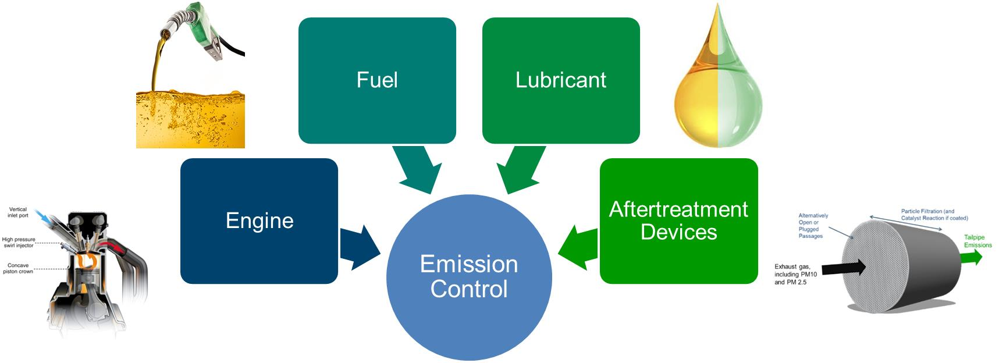

Innovations & Technologies

Smart Sensor Technology: IoT Solutions for Precise Air Quality Monitoring
Smart Sensors: Transforming Air Quality Monitoring with IoT.
Read more →
Innovative Water Quality Sensors: Ensuring Safe Drinking Water with Advanced Technology
Water Quality Sensors: Innovations in Safe Drinking Water Monitoring.
Read more →
Next-Gen Gas Analyzers: Advancements in Emissions Monitoring and Control
Emissions Control: Next-Gen Gas Analyzers for Sustainable Industries.
Read more →
Biotechnology Innovations in Environmental Remediation: Cleaning Contaminated Sites
Biotechnology in Remediation: Innovations for Environmental Cleanup.
Read more →Blockchain Applications in Environmental Monitoring: Ensuring Data Integrity
Blockchain in Environmental Monitoring: Securing Data Integrity.
Read more →
Renewable Energy Monitoring Systems: Harnessing Sustainability in Power Generation
Renewable Energy Monitoring: Innovations for Sustainable Power.
Read more →
Advanced Data Visualization Tools: Turning Complex Environmental Data into Actionable Insights
Data Visualization: Tools for Actionable Insights in Environmental Monitoring.
Read more →